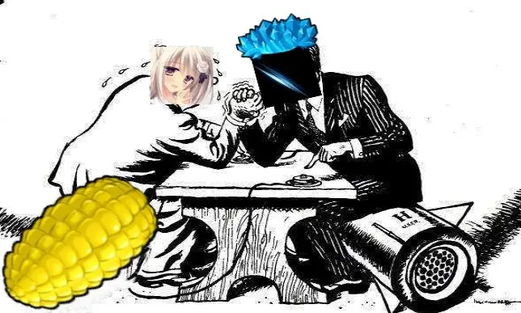
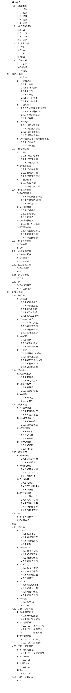
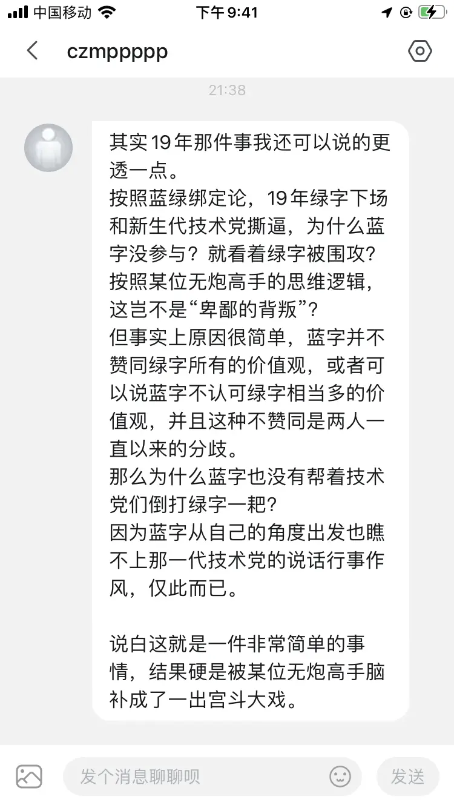

故尸新鞭——植吧史上的旷世之争
作者：子车的得E门生（🔗bilibili）
收录日期：2022-08-26
你即将开始阅读一个过气小游戏的圣经《嗯》。先放松一下，然后集中注意力。抛掉一切无关的想法，让周围的世界隐去。最好关上qq，群聊老跳消息。立即告诉他们：“别在这理发店。”加两个感叹号，否则他们看不见。“我在康《嗯》！不要打扰我！”也许那边是植物批发市场总部，他们无视了你的话。你再大声点，怒吼道：“有本事关了TSV！”你要是不愿意说，也可以不说。

3·28危机概述
午饭后，天气更加阴沉，也更炽热，低沉潮湿的空气，使人异常烦躁。
失控的指令衣着考究，带着象征吧主的绿色纹章上。他时而伫立睥睨，目中不带感情。仿佛预知到即将降临的风暴一般，沉静的看着远方的天空，悠远淡漠的叼着一根吕宋烟。
失控的指令（向天空成45°角）：嗯，出发点不同，看问题的角度自然不同嘛。于我个人来说，植吧如何其实无所谓的，我只关心pvz本身。pvz技术的发展，即是"不可能"逐渐减少，而"有可能"逐渐增多的过程。造阵之__，打阵之__，改阵之__，论阵之__，作为文化未为不可，但对科技的发展毫无贡献，能避免自然是最好的，如果由于各种原因无法避免，可能就会被用来感动自己罢。我眼中的技术圈应是以拓展技术为第一要务。人是复杂的，但互联网上的人可以是不完整的，因而可以是简单的、纯粹的。既然如此，便有可能抽象出一种集体主义的共同意志，在作为技术圈的一部分时，每个人以拓展技术为唯一的冲动，以严格的理性进行价值评判。至于若干年后，我倒是不会悲观地寄希望于后人会对若干年前的已经失去深度的"文化积淀"表示敬仰，①我更希望技术圈本身，愿意继续发掘pvz这个伟大的小游戏的更多的潜力的人作为一个有机体，能够永垂不朽。
最后符上一个目录吧，目录还不完整，有两个点卡住了。有朝一日不咕的话，应该算得上通过逻辑推导建立的技术大厦，而不是什么名词大全吧。

好长的母鹿
灯笼销魂草破门而入，挺着胸脯走进来，他的表情就好像失控的指令化为稀淡的空气，眼睛里没有这人，他走到失控的指令面前，接过目录。他的神情不像失控的指令一样冷静，而是十分激动，时而伫立睥睨，目中含有怒火。手有举动时，必两手同时举出。如无举动时，则拳曲于胸前。
灯笼销魂草：很期待新帖子。对于游戏的玩法构造应该是一个很好的补充。（慢慢撕碎目录，全程并没有哪怕一眼）
然后。活在自己的世界里蛮可悲的。简单说几个东西咯
⑤PVZ不存在科技和技术，简单的规划求解问题，当不起这两个字，别太高看自己了。当然我也不知道为什么本来就是个技术党的称呼，为什么在这样一个小游戏里，最后会上升到科技的程度，是因为人自我**的时候见青山如见我？
我只希望阅读者有一定的科学和数学素养，不要对自己看不懂的东西第一反应就是低头，屈膝，跪在地上哭着喊大佬666，实际上都是很简单的东西啊……只是你，把它故意复杂化了搞得很高深一样……
只说那三个冰骨架帖子吧。②不愿意透露姓名的某人（不是我）看了两次以后，用四句话自我反思加归纳提炼完毕。说的对不对，不瞎的都可以感受下，当然前提是能做阵。不会做的说了也白说。
白昼由于透支的存在，炮骨架完全没劣势，实际上如果用旧体系只需要考虑的是加速插入的平滑这一章。其余类似C6iC4i这种极限减法压制是爆一切的。
失控的指令（早有准备，无视了灯笼销魂草语气中的火药味）：C6iC4i纯减法晚爆一切这种程度的东西半年前就有了，说实话简单轨还真就完爆一切，然而复杂轨并不，要不然谁知道中开14是个什么垃 圾呢。
灯笼销魂草（嘴角抽搐了一下，但很快镇定下来）：简单轨复杂轨这种东西本来就是为了复杂而复杂的概念，OK？自己加戏不要这么多好吗？
基于基础的刷新运算量和用冰条件确定基础循环，然后不管是基于压制强度或者是超多炮通解或者其他思路，会得出一个非刷新运算量的大致区间，结合不同的操作指令技巧，调整细节。整个思路非常清晰，可以复解大部分阵型思路。而不是自己做一堆新概念先把人忽悠成智障。
在这个调整的过程中，调整的累次细化优化，最后可能会产生一个近似逐波的节奏，拜托，那是果不是因，不是因为他逐波所以这是个复杂轨。口口声声逻辑这逻辑从何出？
（语气一转）其实昨天我们想法有点绝对？白昼存在无法放开存冰的阵型，典型例子各种油菜18炮，所以才会有那个极度复杂的强逐波……
失控的指令（轻蔑地）：放开存冰?冰数动态平衡这种纯离散的东西拿过渡时间之类的连续量和加减波这种低维量来描述必然会导出复杂的庞然大物，用强逐波思路找出不计冰位情况下完备的解集，再拿过去试，我觉得我的办法很容易。
灯笼销魂草（听出了对方语气中的轻蔑，语气逐渐激动）：
别故弄玄虚了OK？什么叫纯离散低维度，说人话行不行。一天搞这些概念干啥呢？魔怔了？操作不考虑，产出效率已知，消耗效率已知，用冰波次已知，你告诉我算出来个庞然大物？你用穷举的嘛？之前攻略贴近似穷举，那是求边界极限值。你做应用的为什么做的和做提炼归纳的人一样大的阵势？
来，你给阵，我来用小学生语言论述用冰情况和归纳理论。你觉得你的办法容易？我没意见，你自己开心就好。切勿以己度人。
事实上，白昼根据极限减法爆一切——可能会透支/可能没地方存冰——需要代奏——讨论特化和平滑情况——一般轨迹的逻辑，完全可以形成一套以CxI为理论基底，chxu为常态的节奏框架。那套冰骨架是舍近求远。
失控的指令（不带感情的语气）：舍近求远之类的随便了，中开14这例子就不再重复拿出来，冰骨架炮骨架只是不用的路线，肯定都能达到完备，现在冰骨架经过发展能够达成各种复杂的循环以及初步的逐波，至于炮骨架，希望不要止步于"每个循环每炮打一次"了。
灯笼销魂草（拍桌子）：
每个循环每炮打一次，是炮CD为循环节奏下的自然真理，效益最大化原则。你除非节奏长度拉长到炮CD以上，才具备讨论可能，但是其实简单逻辑推理可知这也是废话。循环CD超过炮CD，自然会产生盈余，就像C节奏中P会有盈余一样，合理规划自然可以542的循环里打出335。合理规划这件事本身是有价值的。只是其必要性在绝大多数时候会被同化到炮CD上，不用拿着个例当共性，绝大部分自由炮阵按照你的极限波长推论，可以组合出40S以上的循环，但是这有意义？最后还不是拿着个例去复杂化整个体系？量子物理数据强无敌所以经典物理去死？
（见到零度想要反驳，提前打断道）
从你现有帖子的逻辑来看，逻辑这两个字离你蛮远的，我建议你解决根本的逻辑自洽问题。
那就是，用谁的眼睛去看世界的问题。
我可以这样说，包括你现在的想法，基本概念的认识，看目录就知道整个世界观都建立在对老的轨道的数值细化和概念优化上。就是建立在基于蓝绿菌这些人的认识基础上，不是吗，什么冰炮IO垫。这些东西的概念提纯完全是我某天突发奇想和蓝字讨论了然后确定的，他们根本就没科学性和合理性可言，你知道吗？
其实我真的很好奇：你如何认识和论证他们就是最正确的认识游戏的方法？是万世不倒的地基，值得你深信在此基础上可以搭建出前无古人后无来者的不朽大厦？难道这些东西的提出者真的是游戏天才，认识游戏的方法和切入点就是天选之子？
还有，轨道本身的理解乃至于最后落到逐波轨道上，它真的是最合理的吗，问题真的要用这个方式讲述出来然后给人求解，真的没有更好的方式了吗？
所以我看着你的帖子，感觉略微有点奇妙，仿佛你搭了个房架子，然后？然后看着人给你一步步的测量勘绘，都不问你要设计方案图，然后还要这房子永垂不朽的？
你想让这个房子永垂不朽只有一个可能，就是虔诚的证明我是神，神性不完备的神，唯有你对我的，比我自己还深入的理解，才能让这个神变得完美，无缺。
坏消息是……我也不知道我要建的房子是不是好的，他只是适合这个历史的一个存在可能性展示。他优不优，是不是最好的对游戏理解。我都不知道啊。
③这个世界有C，也有C++，对了，还有java。
所以呢，现有的东西，根本不可能也不具备严谨到可“科学”论证的基础，这些概念都是我的想法。不能，也不可能搭建起你幻想的“逻辑”大厦。
所以，建议你彻底抛弃这一套东西，自己从0到1去重定义
（终于想起了冰骨架）
至于夜晚，恐怕极限波长与加法均匀排布并没有强关联，而是和炮复用公式相关的。
（又想起了我有一个朋友的前言，干咳了两声，继续说到）
其实我的理解比楼上这位仁兄更简单。用冰条件越差，则运算量间隔排布越均匀。一句话。
SO，轨道从存在到现在，我一直在努力的做一件事，就是尽可能的把这个东西往简单了去诠释，为什么，因为他本来就不值得这么复杂。说不定只是因为我想他想的太复杂。
所以，我也想用这个帖子劝告所有看回帖的，可能对楼主有盲目崇拜的人一件事，不是目录越长，写的东西越正确。还有，也不是学力越高，写的东西越正确。学力只是说明学的能力，和游戏理解完全不一样。
失控的指令（虽然十分不想继续）：一句话好啊，谁拿这句话解个阵给我看看。
老的东西非要摒弃吗?我认为没有必要。老的东西不一定具备合适的逻辑，但不能否定其具有一定的合理性，例如将对僵尸手段分为"削减血量"与"延缓前进"等。我的打算是用较为严格的二分思路不断削减"未知"，至于用了不少老名词，臣妾也是没有办法啊，既有的既合理又不尽合理的名词就在这摆着，全不用?④抱歉那么好的词凭什么不用。用一半?那谁还分得清哪个是哪个。
灯笼销魂草（？）：这还需要解阵？做理论做懵了？都是经典八白昼存双冰可以打出ch6压制程度，夜晚就只能走p5-i。没I就只能P4。这要解？还要悬赏谁去解？亲，自然真理……虽然蛮感谢你提出归纳他的。
完备性？逗我呢？按照你的逻辑完备是谁规定的？穷举可能二分迫近是为完备？数学完备等于科学完备？那你快点把树皮二炮给完备了吧，听说怎么解都解不出个通解真是辛苦了。合理性的理从何出，理就从完备而出！懂吗！不知其全，何以评其优劣善恶而知理？建立在一个外延上根本就没有完备性考究的概念架构上的体系，然后开始强调其内生概念的完备性真的没问题？
那还真不好意思，一个阵都做不出来的神，大概不是这个次元的~叫脑神比较好？
这里还有一个基于合理性和完备性的问题，当然和你说权当于无，对你来说，你的东西完备了就自洽了。
可能你很反感我说的有知识没文化，不过恕我直言，就是这样。稍微有一点的话，就不会把自娱自乐的东西上升到科技高度并且发展信徒了。
有知识有文化谁他妈信这个？啊哈？
从始至终吧，我觉得植吧就是个有点意思的小游戏研究聚合体，只是我自己太虚荣，把造神的传统从绿字造到蓝字再到灵宗，真没想到有一天有人会以为自己是真的神？
失控的指令（拂袖道）：我自然不能保证我做的事情是正确的，但我敢保证我做的事情是不错的。合理性?谁管啊?理是谁规定的?我眼中只有完备性谢谢。
我就是神，谢谢。
尽管已经走出了房间，依旧隐约可以听见灯笼销魂草的咆哮。
什么科学？技术？成熟体系？真的不是不是邪教在传教吗？一群连正规科学的门槛都摸不到的学力不超过学士的小孩子如此高大上的名词张口就来，真的认真思考过自己在做什么？
顺带发个图，看看邪教徒的本质，真没想到有朝一日我自己亲手带大的贴吧，连发帖讲理都不能讲了？啥玩意啊这都是！
我给植吧目前为止的所有所谓研究做个总结吧。
2011年，有个刚好是吧主的玩家强行给所有人推广了他认为的游戏应该这样玩的想法。所有基础概念东西都是那个玩家想的，并没有什么科学可言，翻10-11的老帖子你们自然就知道。
2019年，有个刚好是吧主的玩家觉得按照这个想法，这个世界的真理马上就要被掌握了。只要在那个不完善的科学基础上，做出科学的完善和改进就可以了。
植吧的研究本身就是基于部分天才玩家对游戏的设想基础上做的“由未知到部分已知到迫近全知”的游戏规则理解过程。仅此而已。这个研究并没有涉及这个“游戏世界”的本质，因为涉及到的地方我都自作主张下了定义。
我把这段话单独打，是因为我觉得他应该说给每一个可能读到这个帖子的人。
知识的价值，既在于它的深度，也在于它的可掌控性。我不同意，也不建议，“人”在基于所谓完备性的基础上，去理解和掌握知识，说白了这是没人性的，所谓冰冷和理性，听听就好，毫无价值。因为，你是人，你会有自己的感情，会有自己的述求，这些东西本身就是你对知识产生渴望的缘由。而你也会有自己的灵感，会有自己的猜想，这些才是你在掌握知识的过程中能发现自身价值的地方。
理性？对不起理性的另一面就是虔诚，宗教徒的虔诚。上帝全能而不可知。
1、依次填入文中横线的词语，最恰当的一项是（）
-
A美 重 细 道
-
B重 美 细 道
-
C道 美 重 细
-
D道 细 美 重
1.5（选做）、灯笼销魂草发现问题的途径是（）
-
A收集和分析信息
-
B观察日常生活
-
C技术研究和技术实验
-
D钝角
2、对失控的指令‘我就是神，谢谢。’理解正确的一项是（）
-
A是失控的指令因为真实身份被发现而无奈的承认
-
B讽刺灯笼销魂草没有用唯物主义辩证看待外物，而将逻辑借助于虚幻而不存在的“神”
-
C体现了失控的指令内心对自己坚持事物的自信，照应前文“我自然不能保证我做的事情是正确的，但我敢保证我做的事情是不错的。”
-
D暗喻我94生，委婉的暗示自己吃过的盐比灯笼销魂草吃过的饭还多，隐晦的规劝灯笼销魂草放弃无谓的争论。
3、理解戏剧，需要准确把握人物的内心活动，既“潜台词”，下列选项中对潜台词分析正确的是（）
-
A①，现在的植吧已经因为你的不良行为而完全烂掉了
-
B②，对你的东西我根本不屑于浪费时间去看
-
C③，这个世界有多种多样的东西，不差你一个失控的指令
-
D④，有那么多好词不用，非要借着辩论之名人身攻击
3.5（选做）、下列对文学常识解读正确的一项是（）
-
A古代的吧务常分为吧主、小吧、图片小编、核心技术党、技术党五等，这些吧务除了同姓吧友外，其余多是因为事功和世袭而封的。
-
B太宗是灯笼销魂草的庙号，同样代称此人的称号还有“平渊”“绿字”“吃饭帝”
-
C冰骨架是以零度为代表的第六代技术党因为游戏理解不同而产生的一次变革，其核心是以寒冰菇的CD作为解阵的标准而取代了以炮的CD作为解阵的标准
-
D此大战灯笼失败的根本原因之一，就是蓝字因为被小吧一路暴狂暗算而未能出席

这谁啊？真不熟
4、能不能将引用句改为“我才看了你的帖子三分钟，就已经发现了三个问题”，为什么？
4.5（选做）、试着从结构和内容两方面赏析文中句子⑤。
5、结合全文，谈谈失控的指令以“嗯”为起始句的作用。
6、对于此事件，有人的人认为是失控的指令的独断与专裁导致了此次事件（公元2019年3月28日，燕王失控的指令突挥军南下，以勤王之名，发动政变，变故陡生之间，太宗不知所踪，太祖被困城内，虽与心腹之士同仇敌忾，殊死鏖战，终寡不敌众，悲壮殉国，燕王遂攻占京畿，登极为君，该年改记为零度元年，史称神宗政变，自此开启了植吧以科技为重，而人文鲜受垂青的科技革命时代。）而另一些人则认为是绿字的自大和目空一切导致了这场悲剧。（零度疾祖听之不聪也，谗谄之蔽明也，邪曲之害公也，方正之不容也，故忧愁幽思而作《嗯》。太祖闻之，大怒，大兴师伐零度，不克，乃悉发国中兵，以深入击零，战于楼中楼。而蓝竟怒不救绿，绿大困。未几，祖归，如被冰雪。怒索宗，宗渺然不知所往。既而得植吧倒戈，因而化怒为悲，抢呼欲绝。转而向隅，茅舍无烟，独自默然，不复聊赖。）而还有人认为，此次悲剧是新老技术党观念不合的必然结果。（三·二八的本质是核心技术党与深层管理间的权力斗争。在这场冲突中，他扮演的角色更多的还是核心技术党，挑战原有的三驾马车权力体系。在他看来，像蓝绿这样的深层管理者缺乏监督，形成一言堂，为所欲为。他曾表示过，如果蓝绿有技术，他也不至于如此反感，其言下之意就是深层管理即便存在，也应与技术挂钩，具备与时俱进的技术素养，否则就是德不配位，理应让贤。）读了以上评论，你获得了什么启发和思考，请就此做一篇作文。要求1、字数不少于800字2、不得抄袭、套作3、文中不得出现真实姓名或学校名称
6.5（选做）、阅读上面短文，根据所给情节经行续写，使之构成一个完整的故事。
注意：
1、所续写的短文词数不少于800字
2、至少使用5个短文中标有删除线的句子
3、续写部分分为两段，每段的开头句已为你写好
4、续写完成后，请用下划线标出你所用的关键词语
失控的指令：用冰不管受到其他条件——炮cd或者空间的——多大影响，归根到底，还是具有决定意义的，他构成一条贯穿始终的，唯一有助于理解的红线。
灯笼销魂草：在我面前摇晃着，随时可能揭露出第六代技术党无尽深渊的，不正是被修改器掩盖的砸率吗？
7、对于此事件后灯笼销魂草的结局，有两种描写，你觉得哪一种更加合理？试说明理由。
A周围的一切，忽然都暗下去了，只一瞬，一行巨大的白字突地出现在灯笼销魂草面前。
“白”字
那个灯笼，曾领导着植吧日渐强大，照亮充满官瘾、欺诈、嫉妒、悲伤和罪恶的植吧之路的，闪了一下比以往任何时候都要明亮的光辉，就毕剥一声，昏暗下去，永久熄灭了。
B灯沉思着，在窗前站了一会儿，仿佛不是自己，而是让熊熊大火有时间做出决定。然后他跨出窗台，镇定、缓慢、高傲，没有回头，站得直直的，开始默默走下吧主的神位，威严的像个鬼魂。灯到了下面，到了楼梯的最后一级上，脚踏在地上，这时，一只手落在他的衣领上，他回过头来。
“还是期待新一代轨道读本。”“……没事不改，有事也不改。”